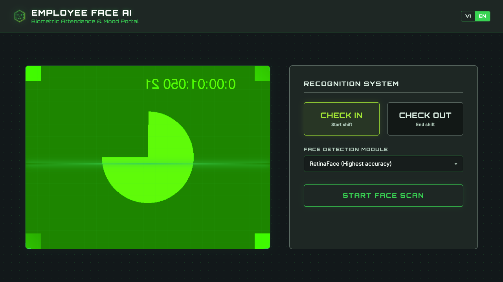
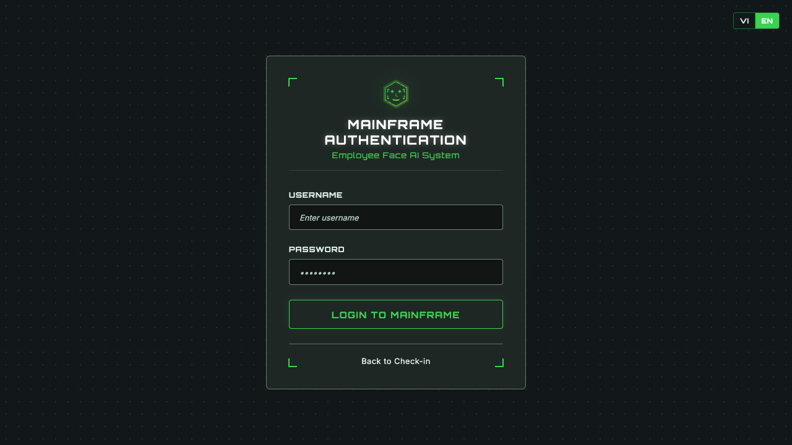
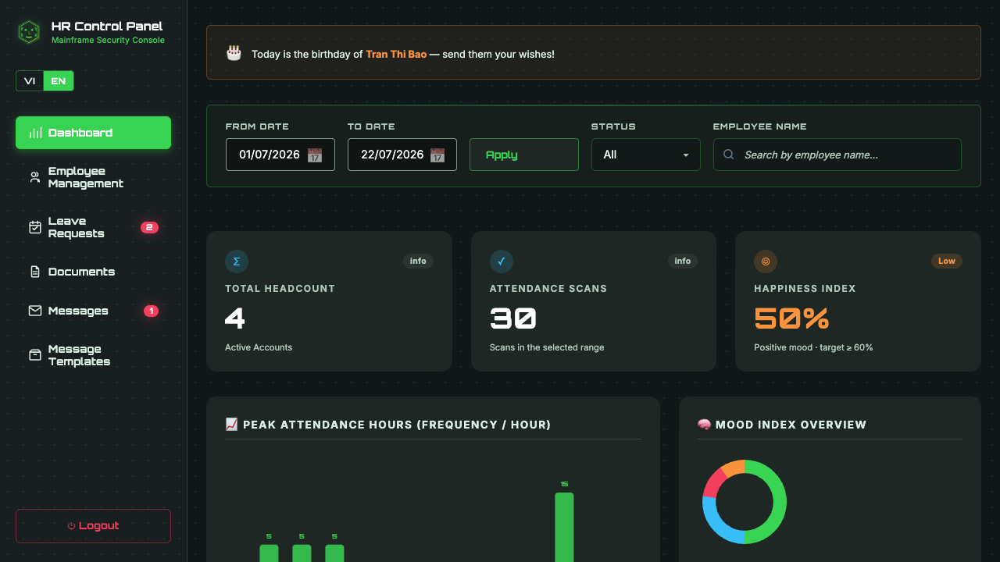
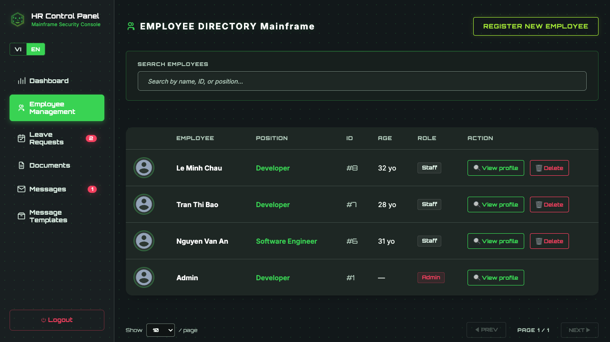
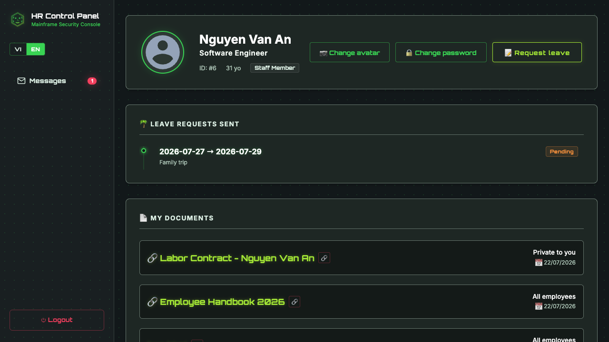
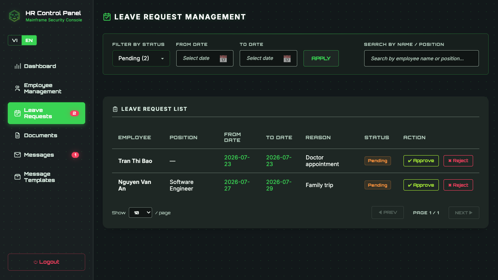
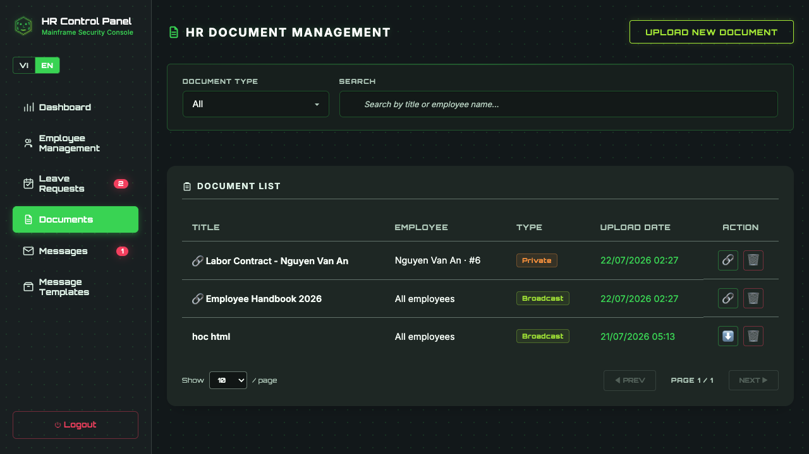
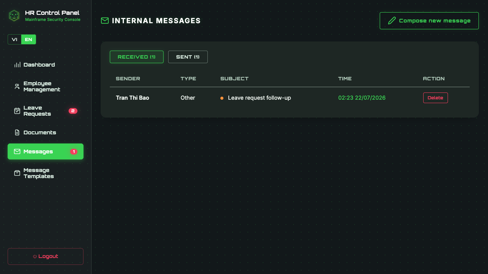

In modern workplace management, biometric check-in systems often rely on external cloud APIs or proprietary hardware vendors. This creates privacy risks, recurring API costs, and dependency on external internet connections. Employee Face AI solves this challenge by delivering a 100% local, self-hosted HR kiosk and personnel management platform where facial recognition, emotion detection, and database storage run completely offline on your own hardware.
Why Employee Face AI?
Employee Face AI combines contactless facial recognition check-in/check-out with HR analytics and employee self-service into a unified open-source system. Designed with a privacy-first mindset, all biometric vectors, photos, and attendance logs remain inside your local PostgreSQL database and disk storage.
- 100% Offline & Private: Zero cloud API calls, zero external tracking. Facial embedding vectors and emotion models run locally on CPU using DeepFace and TensorFlow.
- Dual-Function Biometric Kiosk: Employees step up to a webcam for instant check-in/out while the system records attendance time and dominant mood (happy, neutral, sad, angry, surprised).
- Comprehensive HR Console: Admins gain real-time visibility into peak arrival hours, emotion distribution indices, CSV exports, employee profiles, compensation history, and project assignments.
- Staff Self-Service Portal: Employees can log in securely to view their own attendance timeline, personal profile, and leave records.
System Overview & Visual Screenshots
1. Biometric Check-In / Check-Out Kiosk Interface
The kiosk interface runs in any standard web browser with camera access. When an employee steps in front of the lens, DeepFace recognizes their face and detects their current emotion instantly.

2. Secure Login Portal
Authentication separates administrative users (HR Managers) from standard staff members with role-based access control.

3. HR Admin Dashboard & Workforce Analytics
The executive dashboard provides real-time attendance ratios, peak arrival/departure hours, and an aggregated organizational Happiness Index breakdown.

4. Employee Directory & Management
HR managers can search, filter, register new employees, upload facial template photos, and export complete records to CSV.

5. Comprehensive Staff Profile & Career History
Each employee profile includes job position progression, salary history, technical competencies, assigned projects, and personal documents.

6. Leave Request Workflow & Approval System
Employees submit leave requests online, allowing HR administrators to review, approve, or reject applications with automated status updates.

7. HR Document Management & Employee Contracts
Secure local storage for contracts, non-disclosure agreements, certificates, and compliance documentation.

8. Internal Communication & Messages
Built-in messaging system enabling direct communication between HR administrators and team members without relying on third-party chat tools.

System Architecture & Tech Stack
Employee Face AI is built with a lightweight, modular architecture focused on performance and low resource footprint:
| Component | Technology Stack | Role & Advantage |
|---|---|---|
| Frontend | Angular 21 (Standalone Components, Signals, SCSS, Vitest) | Modern reactive UI, high-speed rendering, zero legacy boilerplate, unit tested with Vitest. |
| Backend API | Pure Python http.server |
Zero heavy framework overhead, low memory footprint, direct REST route handling. |
| AI / CV Engine | DeepFace (TensorFlow, CPU-Optimized) | Facial recognition embedding extraction and emotion classification without GPU requirement. |
| Data Store | PostgreSQL 15 (Docker Container) | Robust relational storage for employee records, logs, credentials, and vector metadata. |
| Storage Layer | Local Filesystem Storage | Secure local disk storage for uploaded face templates, documents, and system logs. |
Getting Started
Deploying Employee Face AI on your local workstation or local office server takes just a few commands:
# 1. Clone repository & configure environment
git clone https://github.com/ttquang1063750/employee-face-ai.git
cd employee-face-ai
cp .env.example .env
# 2. Setup Python environment & dependencies
python3 -m venv venv
./venv/bin/pip install -r requirements.txt
# 3. Setup Frontend dependencies
cd frontend & npm install & cd ..
# 4. Launch PostgreSQL container, Backend API, and Angular Client
./start.sh
Once launched, open your browser to http://localhost:4200/ for the Kiosk interface, or
http://localhost:4200/admin for the HR management dashboard.
Trong quản trị nhân sự hiện đại, các hệ thống chấm công sinh trắc học thường phụ thuộc vào các dịch vụ nhận diện khuôn mặt đám mây (Cloud API) hoặc thiết bị phần cứng đóng độc quyền. Điều này tiềm ẩn rủi ro lộ dữ liệu cá nhân, chi phí duy trì hàng tháng và phụ thuộc vào kết nối Internet. Employee Face AI ra đời nhằm giải quyết triệt me bài toán này: một hệ thống Kiosk chấm công và quản lý nhân sự 100% Offline, tự khởi chạy trên hạ tầng nội bộ mà không gửi bất kỳ dữ liệu nào ra bên ngoài.
Tại sao chọn Employee Face AI?
Employee Face AI kết hợp trải nghiệm chấm công không tiếp xúc bằng khuôn mặt, mô hình phân tích cảm xúc tự động và bảng điều khiển quản trị HR toàn diện trong một giải pháp mã nguồn mở thống nhất. Với triết lý Privacy-First (Bảo mật quyền riêng tư hàng đầu), toàn bộ ảnh chụp, vector đặc trưng khuôn mặt và lịch sử chấm công đều nằm trọn trong cơ sở dữ liệu PostgreSQL local.
- 100% Offline & Bảo mật: Không gọi API bên ngoài, không tốn chi phí Cloud. Thuật toán trích xuất đặc trưng khuôn mặt và cảm xúc chạy hoàn toàn trên CPU thông qua thư viện DeepFace và TensorFlow.
-
Kiosk Chấm công Kép (Face & Emotion): Nhân viên đứng trước camera để thực hiện
CHECK_IN/CHECK_OUT. Hệ thống đồng thời nhận diện trạng thái cảm xúc chủ đạo (vui vẻ, bình thường, mệt mỏi, bất ngờ...). - Bảng điều khiển Admin HR chuyên nghiệp: Cung cấp biểu đồ giờ cao điểm ra vào, chỉ số phân bố chỉ số hạnh phúc (Happiness Index), xuất báo cáo CSV, quản lý hồ sơ nhân sự, lịch sử lương thưởng và dự án.
- Cổng thông tin tự phục vụ (Staff Self-Service): Cho phép nhân viên đăng nhập tài khoản cá nhân để xem lại lịch sử chấm công, thông tin hồ sơ và yêu cầu nghỉ phép.
Hình Ảnh Trực Quan & Hướng Dẫn Chi Tiết
1. Giao Diện Kiosk Chấm Công Sinh Trắc Học
Giao diện Kiosk chạy trực tiếp trên trình duyệt web có kết nối webcam. Khi nhân viên đứng trước ống kính, DeepFace sẽ tự động trích xuất vector khuôn mặt để nhận diện danh tính và suy luận cảm xúc hiện tại.
2. Trang Đăng Nhập Hệ Thống
Hệ thống xác thực phân quyền rõ ràng giữa Quản trị viên HR và Nhân viên thông thường thông qua cổng đăng nhập bảo mật.
3. Bảng Quản Trị Admin HR & Phân Tích Chuyên Cần
Bảng điều khiển cung cấp chỉ số tỷ lệ chấm công theo ngày, biểu đồ khung giờ cao điểm tập trung và chỉ số cảm xúc chung (Happiness Index) của toàn công ty.
4. Quản Lý Danh Sách Nhân Viên
Cung cấp công cụ tìm kiếm, lọc danh sách, đăng ký nhân viên mới, nạp ảnh mẫu khuôn mặt và xuất dữ liệu ra file CSV nhanh chóng.
5. Hồ Sơ Nhân Viên Chi Tiết & Lịch Sử Công Tác
Hiển thị chi tiết vị trí công tác, lịch sử lương thưởng, kỹ năng chuyên môn, dự án tham gia và danh mục hồ sơ cá nhân.
6. Quy Trình Quản Lý & Duyệt Đơn Nghỉ Phép
Cho phép nhân viên gửi đơn nghỉ phép trực tuyến và bộ phận HR xem xét phê duyệt hoặc từ chối với trạng thái cập nhật tự động.
7. Quản Lý Tài Liệu HR & Hợp Đồng Lao Động
Lưu trữ an toàn các tài liệu hợp đồng, cam kết bảo mật NDA, bằng cấp và hồ sơ pháp lý ngay trên bộ nhớ cục bộ.
8. Trung Tâm Tin Nhắn Nhanh Nội Bộ
Tích hợp kênh nhắn tin trực tiếp giữa HR và nhân viên mà không cần phụ thuộc vào ứng dụng chat thứ ba bên ngoài.
Kiến Trúc Kỹ Thuật & Công Nghệ Sử Dụng
Hệ thống được thiết kế theo định hướng tối giản, hiệu năng cao và dễ dàng triển khai:
| Thành phần | Công nghệ | Vai trò & Ưu điểm |
|---|---|---|
| Giao diện (Frontend) | Angular 21 (Standalone Components, Signals, SCSS, Vitest) | Kiến trúc component hiện đại, render nhanh, quản lý state bằng Signals, kiểm thử đơn vị với Vitest. |
| API Server (Backend) | Python http.server thuần (Pure Python) |
Không dùng framework cồng kềnh, tối ưu bộ nhớ RAM, xử lý request REST nhanh gọn. |
| Động cơ AI / Computer Vision | DeepFace (TensorFlow, CPU-Optimized) | Trích xuất embedding khuôn mặt và phân loại cảm xúc chạy mượt mà trên CPU thường (không bắt buộc GPU). |
| Cơ sở dữ liệu | PostgreSQL 15 (Docker Container) | Lưu trữ quan hệ bền vững cho thông tin nhân viên, nhật ký chấm công và thông số sinh trắc học. |
| Lưu trữ tập tin | Local Filesystem Storage | Lưu trữ ảnh khuôn mặt mẫu và tài liệu hồ sơ ngay trên ổ đĩa máy chủ nội bộ. |
Hướng Dẫn Triển Khai Nhanh
Việc cài đặt và khởi chạy Employee Face AI trên máy tính cá nhân hoặc máy chủ nội bộ công ty chỉ cần vài thao tác:
# 1. Clone repository & cấu hình môi trường
git clone https://github.com/ttquang1063750/employee-face-ai.git
cd employee-face-ai
cp .env.example .env
# 2. Khởi tạo môi trường Python & cài đặt thư viện
python3 -m venv venv
./venv/bin/pip install -r requirements.txt
# 3. Cài đặt phụ thuộc Frontend
cd frontend & npm install & cd ..
# 4. Khởi chạy toàn bộ hệ thống (PostgreSQL Docker + Python API + Angular Client)
./start.sh
Sau khi khởi chạy thành công, truy cập http://localhost:4200/ cho màn hình Kiosk chấm công,
hoặc http://localhost:4200/admin để vào bảng quản trị HR.
Khám phá mã nguồn & Triển khai ngay
Employee Face AI là dự án mã nguồn mở hoàn toàn miễn phí. Hãy truy cập repository trên GitHub để xem toàn bộ mã nguồn, đóng góp tính năng hoặc triển khai cho doanh nghiệp của bạn:
Xem dự án trên GitHub ➔📖 Tài liệu tham khảo
- DeepFace GitHub Repository — A Lightweight Face Recognition and Facial Attribute Analysis Framework for Python
- Angular Official Documentation — Modern Web Developer's Platform (Version 21, Signals & Standalone Components)
- PostgreSQL 15 Documentation — The World's Most Advanced Open Source Relational Database
- Python Docs: http.server — HTTP servers implementation in standard library
Bình luận